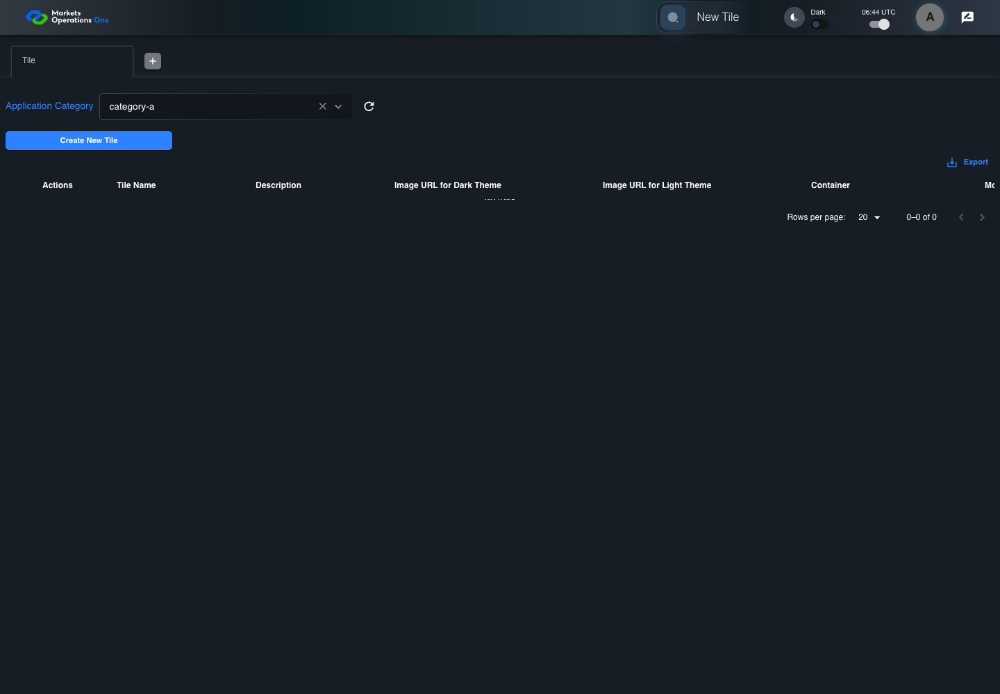
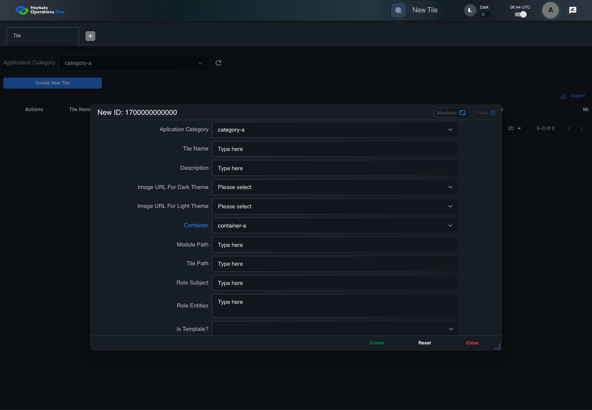
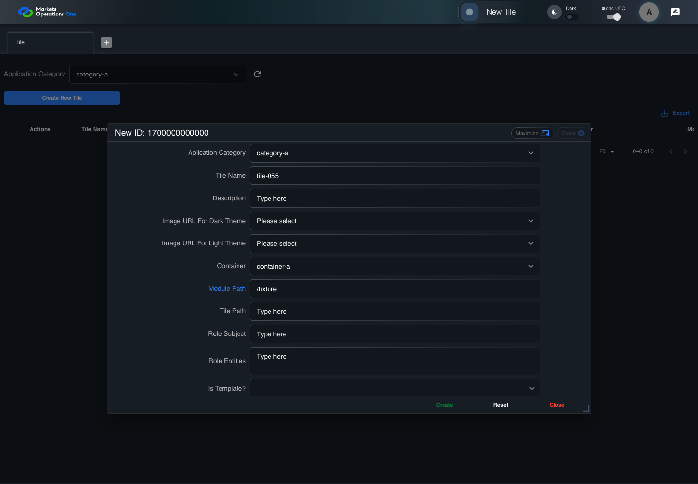
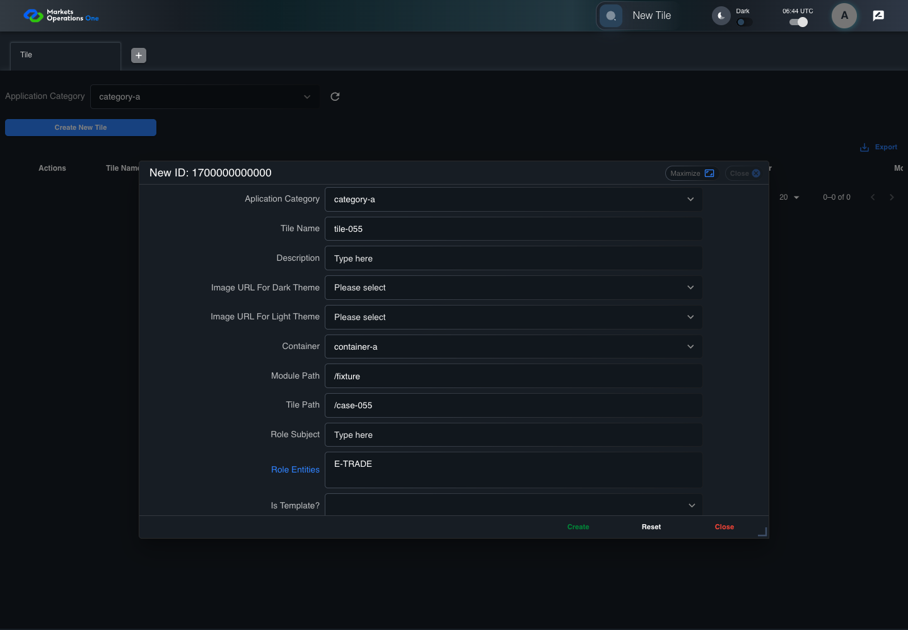
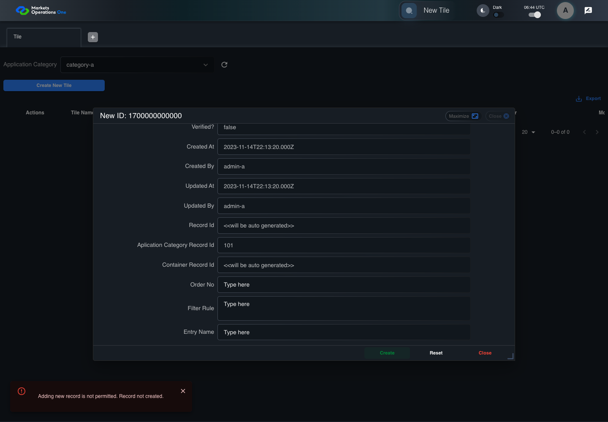

BFF-ADM-055 current BFF administration through actual UI
PASS · application/run-072/bff-adm-055-current-bff-administration-through-actual-ui-c922bbeb26b3-attempt-1 · ACTUAL_APPLICATION_LOCAL_SERVICES
Actual current React and exact-current BFF admin controllers/services/JPA with actual migration DDL in disposable PostgreSQL. Controlled OUD/EMS2 identities and local Spring bootstrap. Fixture SQL seeds/mutates isolated records; service errors are actual database errors. Undefined agreed messages remain unresolved acceptance.
2026-10-22T06:44:31.820Z to 2026-10-22T06:44:41.727Z
Assertions and result · Artifact manifest · Exact run inputs and source hashes
Result SHA-256:ea654709414f613b5b82184f7cd4397430808874a075791c6742dc20e585da46Machine observations
- actual-identity-projection.json
7e438e77a47f8887e7c1b34b979da72c91416fa047666254f539073998be0efc - baseline-inputs.json
a3592a3b0a85aaf4ba5ec72fd99dcfeb4debb041807175d0ecb13ed97fe4f9d4 - bff-boundary.json
1a35f0eacd6535ca266903ba5d9272b8e0f7f8481af7e9b1871b83dbe3967c39 - committed-ui-submission-comparisons.json
37882440ca0196aea674e77ddba4fc471e3331e8cd38518e79e37362bb85917f - creation-clock.json
01245bb6e846b80335ee152e13f3d23afef97ae1fdd6073184531fbd3b6dcc5a - empty-filter-rule-representation.json
c7be0478267cb2025950b76058cb4ec36dd4d8c90a13bfeead31bda79e9cc9fa - fixture-step-10.json
9c0cc2448711650aea181805a82d7db9fc77e9c885d39dc96b721414e06d00df - fixture-step-11.json
3352c6051511418b565929826423ff1d8595ef85339b2596832502e6546a91ba - fixture-step-6.json
3e05ee206a2a7c635c0173e24459f878d841371a34511997a7d7ff4444108e30 - fixture-step-7.json
ee2d6b5a0e4727ae575f6a34ed90143e1249dc14f65e72d6b28e808e4ccd9ad3 - fixture-step-8.json
f7f08e78988d8a123c820fbfb722bcf98b39c688ace4d71f46c64ac1fde68c07 - fixture-step-9.json
24903de9a8c5ac97c2a98fb11fef09d7f1987e395afd02a09ec117747910cf6f - initial-persisted-records.json
9b32636e607a6d3a4160687e0204ba37a109ae5452dfc7ee03f05e8032515004 - persisted-after-submit.json
59611bf8443c523ec6280a18dfbebcd9d6edd72e4c470dee9145dd3997f3c93c - reference-snapshot-3.json
473cde7344e89f2e500e176a1398f14be41d201ec6d60a5695298c4e63a20842 - reference-snapshot-4.json
df87178c1c7e5a9912db875329f04d2ce1bb0adaab649bebb7a4706bef62d87d - ui-origin-bff-requests.json
baef4aca2382e77544d7da13026f1394daa1127cc6f7697b4210c586a76e17d0
Screenshot capture: CAPTURED. Named frames: 25.
Step screenshot evidence: COMPLETE. 24/24 canonical steps have execution screenshots.
Canonical step timeline
Given Admin A uses subject "admin-a" with role "FMO_ADMIN" in an isolated authenticated browser
Execution: PASSED.1. step-01 Visible state after step 1: Given Admin A uses subject "admin-a" with role "FMO_ADMIN" in an isolated authenticated browser
2026-10-22T06:44:34.624Z · 1440×1000
Step: /Users/lushevol/code/github/ratan-release-impact/workbench/tasks/ui-test-coverage-20261022/test-cases.md:17034
SHA-256:c1a5c332c82c22f589880368a63b5badb9b4e34ed98f454be02b74421997b576And the controlled Tile fixture records the initial grid rows and persisted values
Execution: PASSED.2. step-02 Visible state after step 2: And the controlled Tile fixture records the initial grid rows and persisted values
2026-10-22T06:44:34.782Z · 1440×1000
Step: /Users/lushevol/code/github/ratan-release-impact/workbench/tasks/ui-test-coverage-20261022/test-cases.md:17035
SHA-256:ab873c0c0e7d9f00ff43c75e4b19e5a1398b0ce1ce66d2228313f1cc400fb4c5And Category 101 has label "category-a" and Import Map 201 has Module Name "container-a"
Execution: PASSED.3. step-03 Visible state after step 3: And Category 101 has label "category-a" and Import Map 201 has Module Name "container-a"
2026-10-22T06:44:34.848Z · 1440×1000
Step: /Users/lushevol/code/github/ratan-release-impact/workbench/tasks/ui-test-coverage-20261022/test-cases.md:17036
SHA-256:19b61229c843abdb1eaab84fb6a4d415fcbede86d06de2d3bf5a11c5e031b10eAnd both references belong to "FMO_ADMIN" and the Tile page category filter value is Category 101
Execution: PASSED.
4. step-04 Visible state after step 4: And both references belong to "FMO_ADMIN" and the Tile page category filter value is Category 101
2026-10-22T06:44:34.934Z · 1440×1000
Step: /Users/lushevol/code/github/ratan-release-impact/workbench/tasks/ui-test-coverage-20261022/test-cases.md:17037
SHA-256:7bbb9bbecf3edf5a03d9e698122db28af9cee2572b6aef328ffca77427da1d78And the controlled creation clock returns 1700000000000 milliseconds
Execution: PASSED.5. step-05 Visible state after step 5: And the controlled creation clock returns 1700000000000 milliseconds
2026-10-22T06:44:34.982Z · 1440×1000
Step: /Users/lushevol/code/github/ratan-release-impact/workbench/tasks/ui-test-coverage-20261022/test-cases.md:17038
SHA-256:1d0b18f14d131a22cf9aa50234a545afd41801d3b6c74e32d4ce2f4536d68977And the baseline fixture data defines "Tile Name" as "tile-055"
Execution: PASSED.
6. step-06 Visible state after step 6: And the baseline fixture data defines "Tile Name" as "tile-055"
2026-10-22T06:44:35.064Z · 1440×1000
Step: /Users/lushevol/code/github/ratan-release-impact/workbench/tasks/ui-test-coverage-20261022/test-cases.md:17039
SHA-256:4bbcddaac45ecf8673fe7f6fc4351fe34cd307600ef84bb4b80e9c51cd8d6e34And the baseline fixture data defines "Module Path" as "/fixture"
Execution: PASSED.7. step-07 Visible state after step 7: And the baseline fixture data defines "Module Path" as "/fixture"
2026-10-22T06:44:35.133Z · 1440×1000
Step: /Users/lushevol/code/github/ratan-release-impact/workbench/tasks/ui-test-coverage-20261022/test-cases.md:17040
SHA-256:0957dbb7b0b11856e83074a3f0fc0e818396201332621fc0549922259c6a875cAnd the baseline fixture data defines "Tile Path" as "/case-055"
Execution: PASSED.
8. step-08 Visible state after step 8: And the baseline fixture data defines "Tile Path" as "/case-055"
2026-10-22T06:44:35.214Z · 1440×1000
Step: /Users/lushevol/code/github/ratan-release-impact/workbench/tasks/ui-test-coverage-20261022/test-cases.md:17041
SHA-256:1eff1f31d90e24f4ca0a05545df870cc4eb7f3e9adf13037df124c1f97c90bc5And the baseline fixture data defines "Role Entities" as "E-TRADE"
Execution: PASSED.9. step-09 Visible state after step 9: And the baseline fixture data defines "Role Entities" as "E-TRADE"
2026-10-22T06:44:35.288Z · 1440×1000
Step: /Users/lushevol/code/github/ratan-release-impact/workbench/tasks/ui-test-coverage-20261022/test-cases.md:17042
SHA-256:1bab50e881b9aa0bc23d9be6bacfc7bc36d914ab2f8a29346f81de9fac6e380aAnd the baseline fixture data defines "Filter Rule" as ""
Execution: PASSED.10. step-10 Visible state after step 10: And the baseline fixture data defines "Filter Rule" as ""
2026-10-22T06:44:35.368Z · 1440×1000
Step: /Users/lushevol/code/github/ratan-release-impact/workbench/tasks/ui-test-coverage-20261022/test-cases.md:17043
SHA-256:948e3e88a3fe58d6bf17bf014fc0fc9a544fa89ddb3c61858eecf8885d490e2dAnd the baseline Tile references use "Aplication Category" "category-a" and "Container" "container-a"
Execution: PASSED.
11. step-11 Visible state after step 11: And the baseline Tile references use "Aplication Category" "category-a" and "Container" "container-a"
2026-10-22T06:44:35.431Z · 1440×1000
Step: /Users/lushevol/code/github/ratan-release-impact/workbench/tasks/ui-test-coverage-20261022/test-cases.md:17044
SHA-256:a541d82a8c45b40d2913847bcacb6df264176e8426ec2946f23668accb324aa0And the controlled BFF configuration sets "fmaaProperties.creationEnabled" to false
Execution: PASSED.
12. step-12 Visible state after step 12: And the controlled BFF configuration sets "fmaaProperties.creationEnabled" to false
2026-10-22T06:44:35.496Z · 1440×1000
Step: /Users/lushevol/code/github/ratan-release-impact/workbench/tasks/ui-test-coverage-20261022/test-cases.md:17045
SHA-256:f7524f52e608ff8774221932b9f00ca28c690f9fce3e84b7b2da763232190253When Admin A clicks the button labeled "Create New Tile" on the Tile administration page
Execution: PASSED.13. step-13 Visible state after step 13: When Admin A clicks the button labeled "Create New Tile" on the Tile administration page
2026-10-22T06:44:35.880Z · 1440×1000
Step: /Users/lushevol/code/github/ratan-release-impact/workbench/tasks/ui-test-coverage-20261022/test-cases.md:17046
SHA-256:5f1c4bdca5226ddf5f4016e9a4d55f84af70d1e1e78b7c06f66f303e802dc332Then the dialog titled "new ID: 1700000000000" is visible on the Tile administration page
Execution: PASSED.14. step-14 Visible state after step 14: Then the dialog titled "new ID: 1700000000000" is visible on the Tile administration page
2026-10-22T06:44:36.270Z · 1440×1000
Step: /Users/lushevol/code/github/ratan-release-impact/workbench/tasks/ui-test-coverage-20261022/test-cases.md:17047
SHA-256:c10eb99969170824d802316a658ecc87ee10ee40a91b36553cc2fa62fbb4ef56When Admin A clicks the combobox labeled "Container" in dialog "new ID: 1700000000000"
Execution: PASSED.15. step-15 Visible state after step 15: When Admin A clicks the combobox labeled "Container" in dialog "new ID: 1700000000000"
2026-10-22T06:44:36.834Z · 1440×1000
Step: /Users/lushevol/code/github/ratan-release-impact/workbench/tasks/ui-test-coverage-20261022/test-cases.md:17048
SHA-256:242408975d5ad3fa0bf6f306b5052dde2d6635df59ff6ee23995ac0ca672bd2cAnd Admin A clicks the option labeled "container-a" in the expanded "Container" listbox for dialog "new ID: 1700000000000"
Execution: PASSED.
16. step-16 Visible state after step 16: And Admin A clicks the option labeled "container-a" in the expanded "Container" listbox for dialog "new ID: 1700000000000"
2026-10-22T06:44:37.315Z · 1440×1000
Step: /Users/lushevol/code/github/ratan-release-impact/workbench/tasks/ui-test-coverage-20261022/test-cases.md:17049
SHA-256:e37cbd6d1fad396085c0ece888a49638f039ea2639023fd22a2413483377777aAnd Admin A fills the textbox labeled "Tile Name" with "tile-055" in dialog "new ID: 1700000000000"
Execution: PASSED.17. step-17 Visible state after step 17: And Admin A fills the textbox labeled "Tile Name" with "tile-055" in dialog "new ID: 1700000000000"
2026-10-22T06:44:37.775Z · 1440×1000
Step: /Users/lushevol/code/github/ratan-release-impact/workbench/tasks/ui-test-coverage-20261022/test-cases.md:17050
SHA-256:291e22a5df86e315a1fdb8eb317693374922b4525a3874125754072c19f8a477And Admin A fills the textbox labeled "Module Path" with "/fixture" in dialog "new ID: 1700000000000"
Execution: PASSED.
18. step-18 Visible state after step 18: And Admin A fills the textbox labeled "Module Path" with "/fixture" in dialog "new ID: 1700000000000"
2026-10-22T06:44:38.223Z · 1440×1000
Step: /Users/lushevol/code/github/ratan-release-impact/workbench/tasks/ui-test-coverage-20261022/test-cases.md:17051
SHA-256:91984b1453ba3151a0bb64198c5bb27e2d3834ae0b3196f04ccca7d4db4a3592And Admin A fills the textbox labeled "Tile Path" with "/case-055" in dialog "new ID: 1700000000000"
Execution: PASSED.19. step-19 Visible state after step 19: And Admin A fills the textbox labeled "Tile Path" with "/case-055" in dialog "new ID: 1700000000000"
2026-10-22T06:44:38.691Z · 1440×1000
Step: /Users/lushevol/code/github/ratan-release-impact/workbench/tasks/ui-test-coverage-20261022/test-cases.md:17052
SHA-256:43bc42c8df53fe0d15eddfac087c01ce4f6e5af035c0cd59495cb9c51bc09a31And Admin A fills the textarea labeled "Role Entities" with "E-TRADE" in dialog "new ID: 1700000000000"
Execution: PASSED.
20. step-20 Visible state after step 20: And Admin A fills the textarea labeled "Role Entities" with "E-TRADE" in dialog "new ID: 1700000000000"
2026-10-22T06:44:39.187Z · 1440×1000
Step: /Users/lushevol/code/github/ratan-release-impact/workbench/tasks/ui-test-coverage-20261022/test-cases.md:17053
SHA-256:ccedf780bf4ec8880373b39e5f0b2a9e3fbd2b2d283074a41e66630065e1e08aAnd Admin A fills the textarea labeled "Filter Rule" with "" in dialog "new ID: 1700000000000"
Execution: PASSED.
21. step-21 Visible state after step 21: And Admin A fills the textarea labeled "Filter Rule" with "" in dialog "new ID: 1700000000000"
2026-10-22T06:44:39.729Z · 1440×1000
Step: /Users/lushevol/code/github/ratan-release-impact/workbench/tasks/ui-test-coverage-20261022/test-cases.md:17054
SHA-256:e22e774f95a5c4395836dd2020cc8da3062744677eed6be3e97fb9e7d5eaa2a0And Admin A clicks the button labeled "Create" in dialog "new ID: 1700000000000"
Execution: PASSED.22. step-22 Visible state after step 22: And Admin A clicks the button labeled "Create" in dialog "new ID: 1700000000000"
2026-10-22T06:44:40.216Z · 1440×1000
Step: /Users/lushevol/code/github/ratan-release-impact/workbench/tasks/ui-test-coverage-20261022/test-cases.md:17055
SHA-256:41cfcba6f37d96aec52bb59c3bd1e8eadde1b8ec09f80445d67cf1ce5447bbdeThen the alert with severity "error" in the portal snackbar contains the exact text "Adding new record is not permitted. Record not created."
Execution: PASSED.23. step-23 Visible state after step 23: Then the alert with severity "error" in the portal snackbar contains the exact text "Adding new record is not permitted. Record not created."
2026-10-22T06:44:40.335Z · 1440×1000
Step: /Users/lushevol/code/github/ratan-release-impact/workbench/tasks/ui-test-coverage-20261022/test-cases.md:17056
SHA-256:af7ccd2d62591f11c21f8777571f8c4dd2571719988c11ed67165289ffbd6919And the Tile data grid with column "Record Id" row identifiers and loaded field values equal the initial grid snapshot on the Tile administration page
Execution: PASSED.
24. step-24 Visible state after step 24: And the Tile data grid with column "Record Id" row identifiers and loaded field values equal the initial grid snapshot on the Tile administration page
2026-10-22T06:44:40.520Z · 1440×1000
Step: /Users/lushevol/code/github/ratan-release-impact/workbench/tasks/ui-test-coverage-20261022/test-cases.md:17057
SHA-256:f2f1546154eca01258a2cf5ff85712219fbcdec943a83a20ebf484cfe5744034
Additional named frames
Screenshots establish visible state only. Assertions and traces support functional claims.